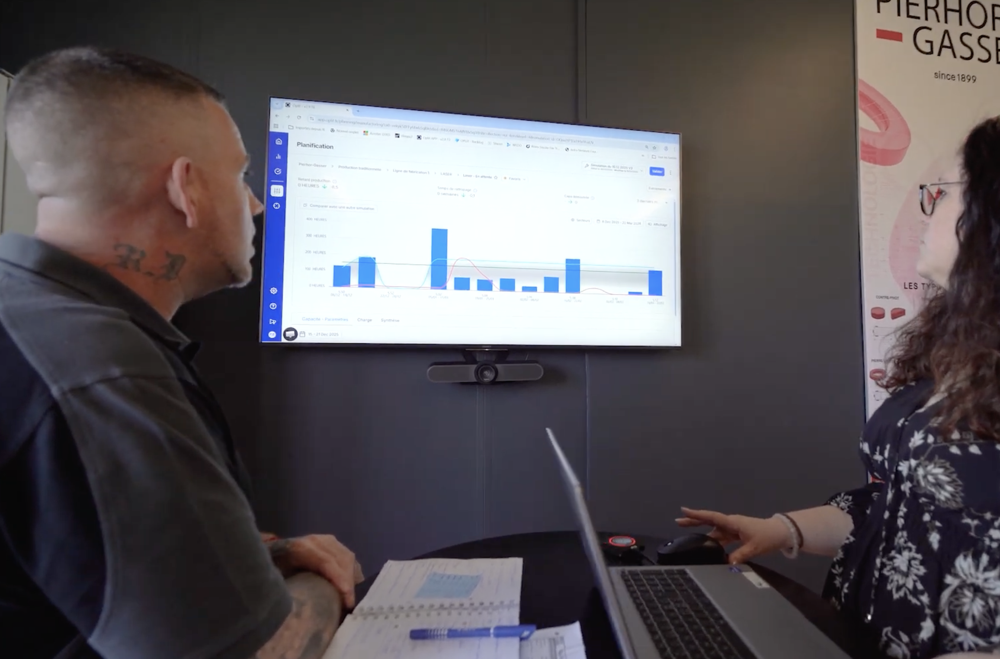
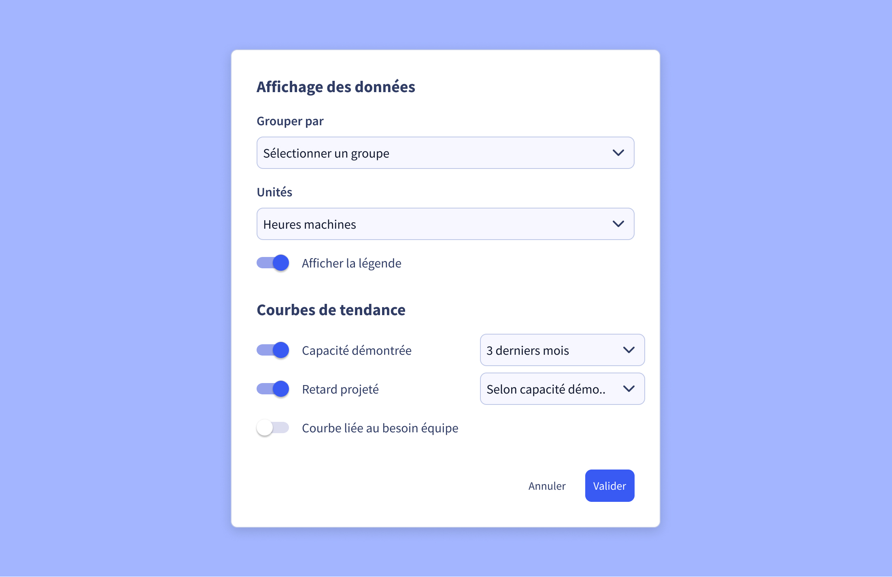
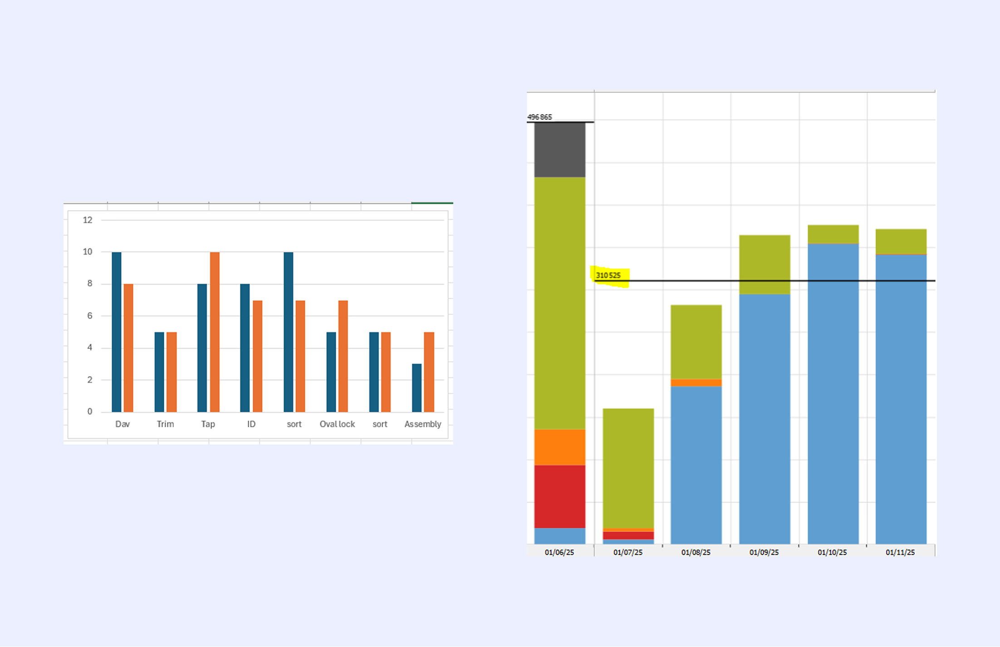
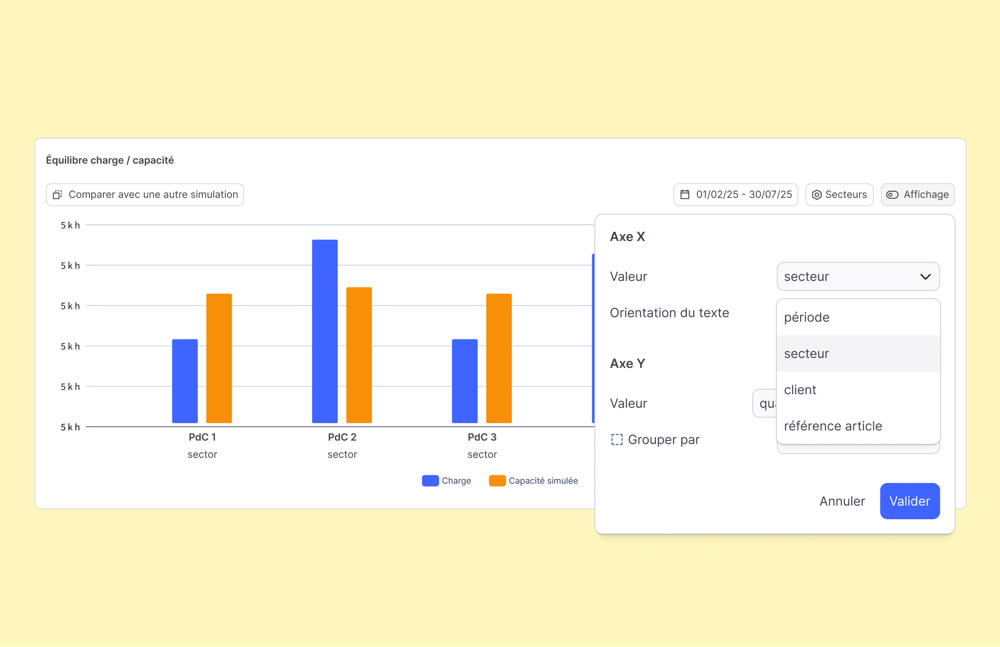
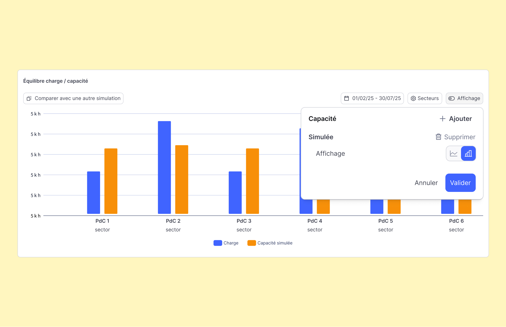
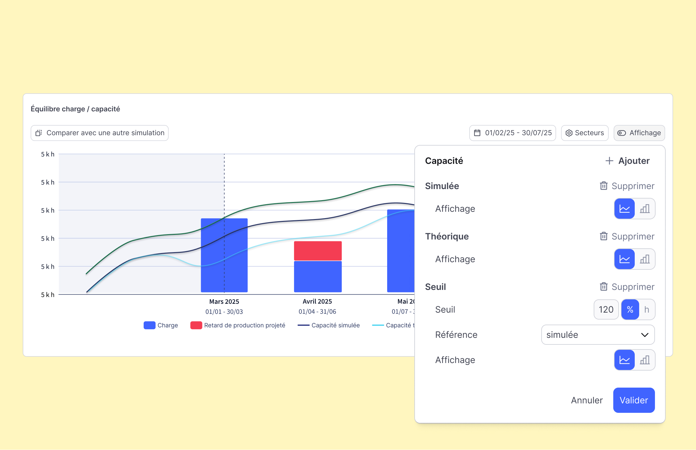

Étude de cas ✦ Oplit ∗ Planification de production
D'un graphe figé à un outil de pilotage flexible
Le graphe charge/capacité est l'écran central des planificateurs d'Oplit — et il était figé.
J'ai conçu trois améliorations pour en faire un outil de pilotage vraiment flexible, du choix
des axes à l'ajout de courbes de référence.

Le graphe charge/capacité en usage réel — revue de planification chez un industriel
Livré
Décembre 2025
Rôle
Product Designer
Équipe
PDP · Oplit
Périmètre
Recherche→UX→UI
01∗Contexte
L'écran central des planificateurs
Oplit est une solution de planification de production pour les industriels. Le graphe
charge/capacité est l'écran où les planificateurs visualisent si leurs ateliers sont en sur
ou sous-charge et prennent leurs décisions d'ajustement.
Le graphe existant était rigide : un seul axe temporel, un seul type de visualisation, peu de
courbes de référence.

Le panneau d'affichage — regroupement, unités et courbes de tendance configurables
02∗Recherche
Trois frustrations remontées du terrain
Nous étions partis du principe que les clients voulaient un graphe entièrement personnalisable.
Les entretiens terrain ont nuancé ce postulat : leurs besoins n'allaient pas si loin, mais
trois manques fondamentaux revenaient systématiquement.
01
Axes figés
Impossible de comparer la charge entre plusieurs postes similaires pour redistribuer la capacité. Les planificateurs faisaient ce travail mentalement ou dans Excel.
02
Type de graphique unique
La capacité ne pouvait s'afficher qu'en courbe. Pour certains usages, notamment quand les secteurs sont en abscisse, les barres seraient bien plus lisibles.
03
Des valeurs de référence manquantes
Aucune courbe de capacité standard, cible ou moyenne pour contextualiser la charge. Impossible d'identifier rapidement un écart par rapport à un seuil.

Des graphes que les clients construisaient à côté d'Oplit, dans leurs rapports de production — ils ont révélé ce qui manquait au graphe natif.
03∗Solution
Trois améliorations, un graphe enfin flexible
Trois leviers de flexibilité, choisis pour couvrir les besoins les plus fréquents sans
alourdir l'interface.
◆ Feature 01
Changement des axes
L'axe des abscisses devient configurable : par article, par client ou par poste de charge. Les planificateurs peuvent enfin comparer la charge de postes similaires pour décider où redistribuer la charge en fonction de la capacité.

La valeur de chaque axe se choisit dans un menu — ici la charge par poste, comparée par secteur
◆ Feature 02
Changement du type de graphique
La capacité peut désormais être affichée en courbe ou en barres verticales, au choix de l'utilisateur. Ce paramètre change la lisibilité selon le contexte — notamment quand les secteurs de production sont positionnés en abscisse.

Un simple sélecteur bascule la capacité entre courbe et barres, selon la lecture voulue
◆ Feature 03
Courbes informatives
De nouvelles courbes superposables permettent de contextualiser la charge en un coup d'œil :
Capacité standard — la capacité sans aucune modification, pour mesurer l'impact des événements.
Capacité cible — un seuil de référence choisi par l'utilisateur.
Moyenne de la charge — pour visualiser la tendance sur la période.

Chaque courbe de référence — simulée, théorique, seuil — s'active et se règle depuis le panneau Affichage
04∗Impact
Trois améliorations en production
Trois améliorations livrées dans une seule release en décembre 2025, couvrant les besoins
les plus fréquents remontés en entretiens.
3
améliorations de flexibilité livrées
Déc. 2025
déployées en une seule release
✦Métriques d'adoption (NPS, retours clients, usage des nouvelles options) en cours de mesure.
05∗Apprentissages
Ce que j'ai appris
✦
La flexibilité ne veut pas dire tout laisser paramétrer.
Rendre le graphe « customisable » aurait pu aboutir à une interface surchargée. Le défi a été d'identifier les quelques axes de liberté qui couvrent l'essentiel des besoins sans complexifier l'UI pour les autres.
✦
Les verbatims d'interview orientent mieux que les specs.
La phrase « on perd 10 minutes à chaque réunion à reconfigurer l'affichage » a été plus décisive pour prioriser certaines fonctionnalités que n'importe quelle spec technique.
✦
Un graphe industriel s'adresse à des experts.
Les planificateurs comprennent vite des interfaces denses — le risque était la sous-information plutôt que la surcharge. Calibrer la densité pour un profil expert a changé plusieurs décisions de design.